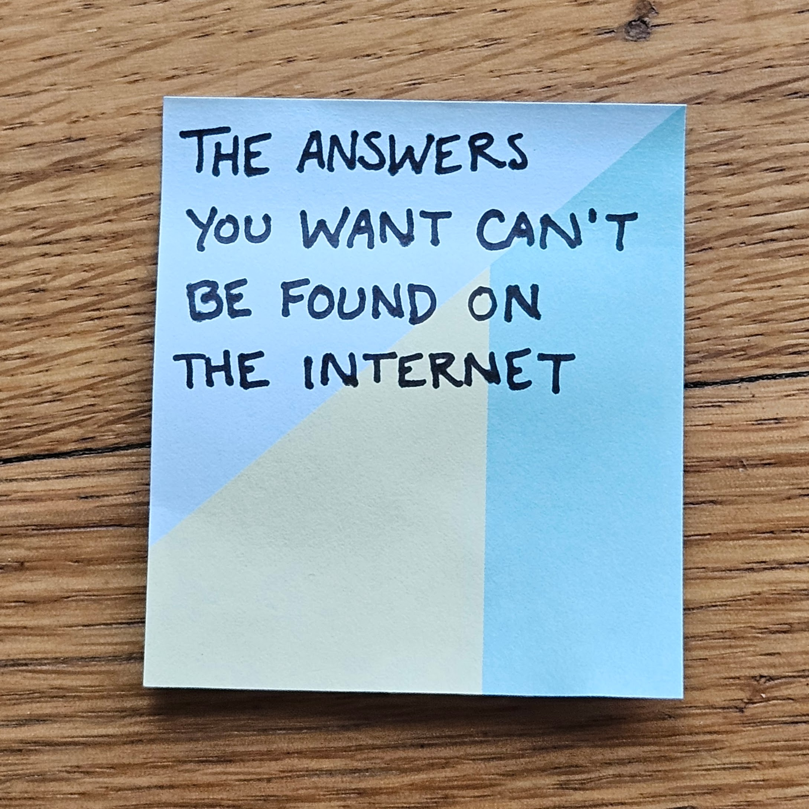

I have this written on a post-it stuck to my desktop screen because I desperately need this reminder. In times like these, I am prone to dive down a researching rabbit hole. I refresh news feeds– NPR, The Guardian, Slate, AP News. I put books about authoritarianism and tyranny and citizenship on hold at the library. I follow my Senators on social media and search their websites for press releases. If only I can learn more, know more, see more, surely I will feel better.
But I already know this is a lie.
What I want is not to know more about how countries slide into authoritarianism or effective ways to build citizen power. What I want to know is what we all want to know.
That we will be safe.
That our families will be safe.
That we won’t lose our jobs.
That someone is going to do something about all this.
That ICE won’t show up at our kids’ school.
That our friend will get to keep their green card.
That our research funding won’t evaporate.
That some loophole is going to save us.
That the work we spent a decade on won’t be dismantled within days.
That somewhere there is some convincing argument that will get people on our side.
We want to be soothed. We want to know that in the end it will all turn out okay, that good will prevail. We are grasping frantically for a rope, a toehold, something to tether us in the face of fear, some kind of certainty.
But that certainty does not, cannot, exist.
Uncertainty is a fundamental part of being human.
The plain truth is that we were never safe. There is no power, no money, no structure, no knowledge, no belief that can fully insulate us from the uncertainty of this life in this world. The bottom can always drop out. We just usually don’t have to think about this.
And in those times when the bottom does drop out– for an individual, a family, an entire country– we often turn quickly to easy explanations as self-protection.
“She was pretty old,” we say to the friend whose grandmother died. Those I love are not that old, I say to myself.
“Was he a smoker?” at the news of the lung cancer diagnosis. Good thing my parents never smoked.
“God has a plan,” from the faithful folks. Let’s focus on some eventual good instead of acknowledging the current moment’s pain.
“Their democracy was never that stable,” upon reading the headlines from that place on the other side of the world. We have a few more hundred years on our side.
“They’ve been fighting each other for centuries,” at the news of the latest bombings. They are different from us.
“Evil is real”, when reading about those historic atrocities. Of course I am a good person.
These small acts of distancing, of self-protection, of deflection move us away from the fears of the real truth– that those we love are fragile and will someday die, as will we. That we cannot ward off aging or cancer or cardiac arrest with just the right diet or exercise routine. That no country is immune to collapse or invasion or loss of freedom. That the ability to do incredible good and horrific evil lives in each one of us.
The internet can provide us all sorts of answers so quickly to so many other questions. Is “Ring around the Rosie” really about the plague? How long should I cook a soft-boiled egg? What is this mystery tool I found in my parents’ junk drawer? Of course we go looking for the bigger answers here too. We can read and scroll and pontificate and factcheck and argue in the comments. But we will not find the answer to our fears here.
When I was in my 20s, my partner and I had a string of three quite-bad years. A brush with cancer. A string of hospitalizations and a major surgery. And finally, my dad’s sudden and completely unexpected death. The bottom dropped out. Some friends disappeared. But other friends and family members and colleagues and kind strangers caught us– with meals and mail, helping my mom run the family business in those first gutting few months, letting us sit sullen and angry and sad at the kitchen table while they made tea, hauling boxes, long phone calls, texts on the holidays and anniversaries, cash tucked in cards and unexpected Venmo notifications. None of these things made the pain disappear or the grief smaller. But they sustained us through.
It is normal, reasonable, rational to be afraid right now, to want reassurance that it will all be okay, but looking to the internet to provide that will either mislead us or spiral us deeper into fear. Instead, let’s pause. Breathe. Then look for the people who will sustain us through. Who can you connect with, ideally in-person, but by phone or handwritten note if need be? Whose voice makes you feel anchored? Nurture those connections, with coffee and tea, reading recommendations, movie nights, unexpected cash in envelopes, errand runs, care packages, pictures of baby animals, and more.
This is how we will sit with our fear, together, and not be overwhelmed, but be able to act.
This week’s action and further reading
Think of someone whose company you enjoy, who makes you smile, or who you know loves you deeply. Write that person a physical note and mail or hand-deliver it to them. If you don’t have their address, ask them for it.
Thirty lonely but beautiful actions you can take right now
There are only 1,000 workdays in this administration. You’ve survived 20 of them. Get yourself a chart (or make your own!) and mark them off.
Ways to take in information without getting pulled under
Most of the trouble that afflicts human beings in their lives can be traced to the failure to love.